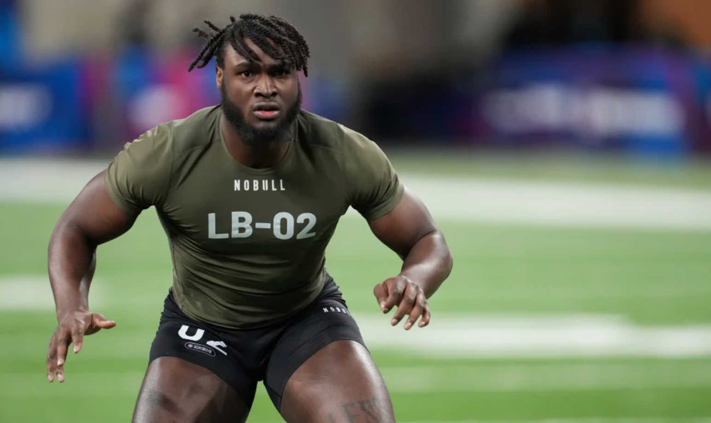

Will Anderson Jr, Arguably The Top Defensive Player in This Draft : Image by Kirby Lee at https://rolltidewire.usatoday.com/lists/2023-nfl-combine-results-for-will-anderson-jr/
GRADES
Will Anderson Jr
9.1 - High Motor Edge Rusher With Great Bend and Explosiveness
Jaxon Smith Njigba
8.2- Twitchy, quick slot receiver that lacks long speed. Should be a day 1 starter
Anthony Richardson
6.8 - Boom or Bust Qb Prospect. Sub-par college tape but traits of a top 10 QB in the NFL